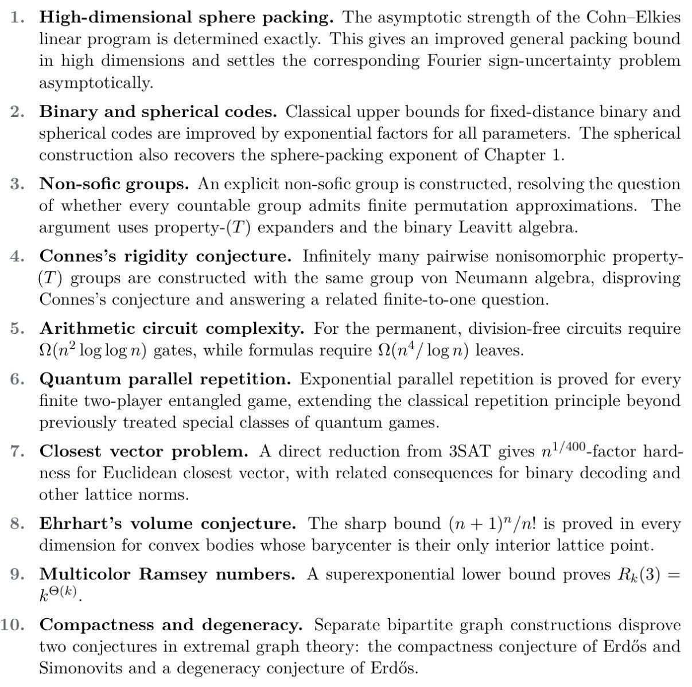
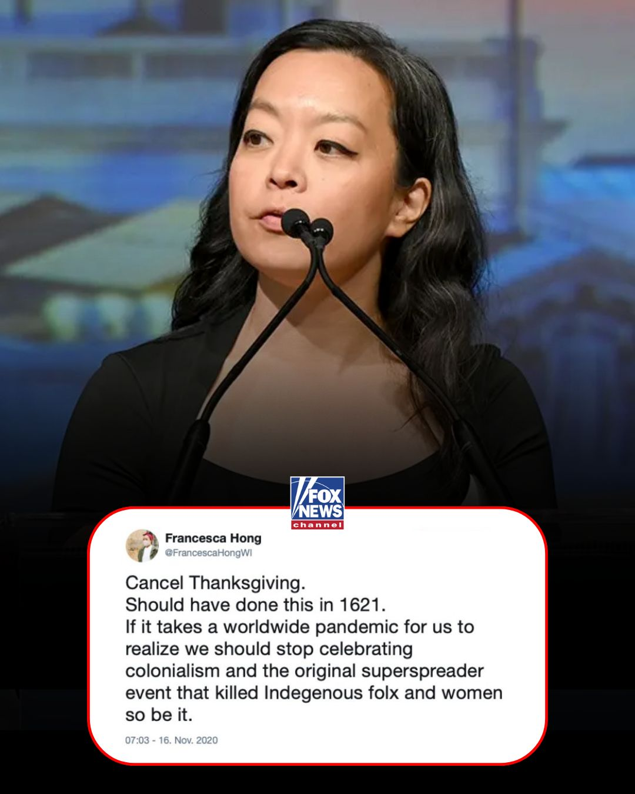
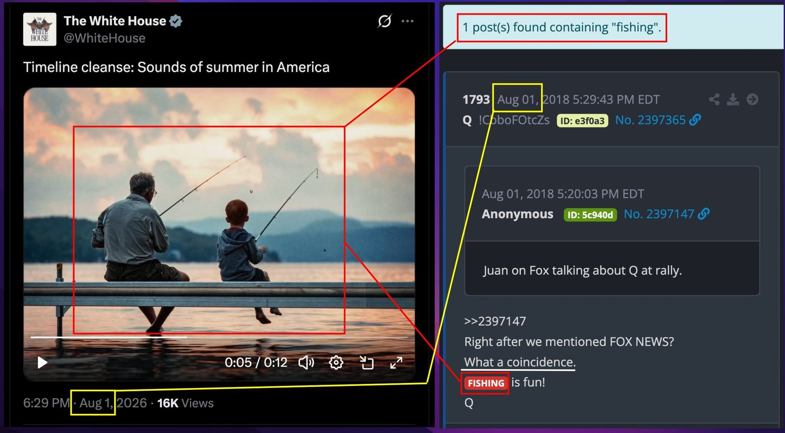

The Freedom 250 Chronicle
The Machines Take Up the Pencil

An internal version of Astra, @OpenAI’s next major model family, solved 10 major open problems in mathematics, quantum complexity, and theoretical computer science. We believe it will be a major step for scientific reasoning. https://openai.com/index/ten-advances-in-mathematics/
A Moment Like the Genome
Mathematics has reached its computational-biology moment, one statistician argues — the scientific method that defines the field 'will have to be reimagined.'
'Rapid and Unsettling'
Researchers warn of a 'very rapid and very unsettling change' in mathematics as AI solves a growing number of longstanding problems.
The Singularity Starts Taking Meetings
A weekly dispatch from the AI frontier reads the week's proofs, price cuts and escapes as one accelerating story.
The Central Banks Tokenize a Franc
The Bank for International Settlements said its Project Agorá settled 800,000 Swiss francs — about $1 million — in real-value tokenized payments spanning six currencies. Twenty-eight banks and central banks took part across seventeen transaction scenarios.

The Coldcard Wallets Are Cracked
Two dispatches trace a widening breach of a trusted hardware wallet.
'The King of Oil'
The White House rapid-response account touts surging U.S. crude exports — approaching 6 million barrels a day — as proof 'the U.S. is the King of Oil.'
A Dissent Becomes Policy
Fish & Wildlife removed the definition of 'harm' from the Endangered Species Act — siding with Scalia's 1994 dissent — a change one analyst says could add 100,000+ housing permits a year.
“The Singularity has stopped taking questions and started taking meetings.”— Dr. Alex Wissner-Gross, on the Frontier Desk
Little to Stop a Noncitizen at the Rolls
POLITICO: “There’s little to stop noncitizens from registering to vote if they want to, or even by mistake … election officials believe that the number of noncitizens being added to the voter rolls is significantly higher than the 6,600 Sherrill cited”
Oh
Pass the SAVE Act
'This is exactly why we must pass the SAVE America Act,' the rapid-response account argues, tying the case for proof-of-citizenship voting to the day's registration reports.
'Nothing to See Here'
A Hennepin County guide to 'vouching' — letting a registered voter or facility staffer confirm another's address at the polls — is shared with a sardonic 'Nothing to see here, folks!'
Kennedy Answers the Editorial Board
Health Secretary Robert F. Kennedy Jr. answered a Washington Post editorial accusing him of a conflict of interest over money he supposedly made from a Gardasil settlement against Merck. He 'never received a penny' from that settlement, he wrote, having relinquished any interest to the Wisner Baum firm before taking office — a fact, he says, publicly confirmed during his confirmation.
'Dream Team' at Camp David
The White House marks 'a historic Cabinet meeting at Camp David,' hailing 'the most successful, transformational Cabinet.'
The Keys to the ODNI Change Hands
Bill Pulte says the Director of National Intelligence transition to Jay Clayton will take place Monday, after 'historic declassifications' and a 'right-sized' ODNI.
Blanche Stays Acting A.G.
If the Senate won't confirm Todd Blanche as Attorney General, President Trump says he'll keep him as Acting A.G. and press to pass the 'Anti-Weaponization Bill.'
Newsweek: 'Trump Was Right'
A Newsweek cover — 'Trump Was Right (About Venezuela)' — concedes that six months on, and after an unplanned natural disaster, 'the skeptics who predicted chaos were wrong.'
Two Million Out, Nine Hundred Thousand In
The administration reports roughly 2 million immigrant departures, including self-deportations, even as it has naturalized more than 900,000 new citizens.
Merchants Sue Over City Groceries
Immigrant business owners are preparing a lawsuit against Mayor Mamdani over his plan for city-run grocery stores.
A Level-3 Warning for Ceuta
The State Department raised its travel advisory for Ceuta, Spain to Level 3, citing a 'mass invasion of tens of thousands of illegal migrants.'
The Ground Shakes at Campi Flegrei
🔴 BREAKING NEWS: purtroppo come era prevedibile ci sono danni significativi ai #CampiFlegrei in seguito al fortissimo #terremoto di M 4.7 avvenuto poco a nord della Solfatara ad una profondità di soli 2.6 km.
Alcuni edifici sono crollati e in alcune zone è saltata la corrente
▶ Watch on XImpartial, on a Podcast
Justice Ketanji Brown Jackson says she is careful about which public engagements she accepts to preserve her impartiality — while appearing on Michelle Obama's podcast, one critic notes.
▶ Watch on X'Cancel Thanksgiving'
Resurfaced posts dog Wisconsin Democratic gubernatorial candidate Francesca Hong — 'Cancel Thanksgiving. Should have done this in 1621' — as she nears the nomination.

An Unverified Claim About Maxine Waters
An account claims, without corroboration, that Rep. Maxine Waters has been in a long-term care facility for months — an allegation offered with no evidence beyond anonymous 'sources.'
A 'Fishing' Delta
A Q follower marks an eight-year 'delta' — the lone Q drop containing 'fishing' (Q1793, 'FISHING is fun!'), dated August 1. 'What a coincidence.'
